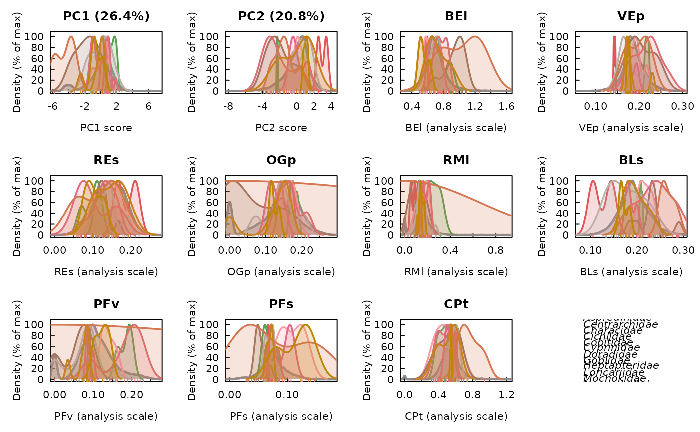
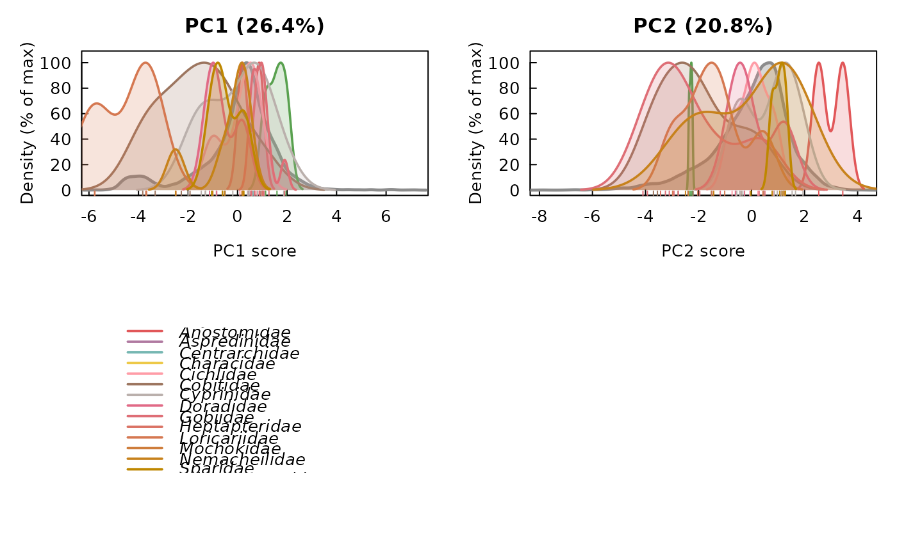
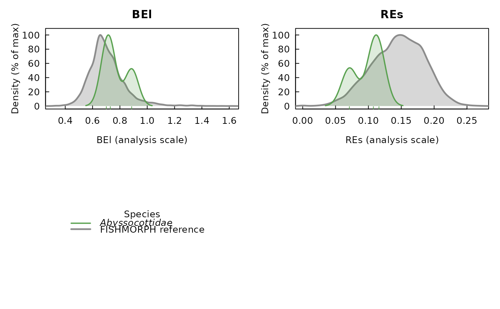

Density curves of the FISHMORPH space, per functional axis and per ratio
Source:R/plot-fishmorph-density.R
plot_fishmorph_density.RdFor a projection built by project_fishmorph(), draws a panel of kernel
density curves for every requested variable – each functional (PCA) axis
and each morphological ratio – comparing the whole FISHMORPH reference
database (a filled grey curve) with each focal species (a coloured curve).
This is the one-dimensional, marginal complement to the two-dimensional
ordination drawn by plot.fishmorph_projection(): rather than
showing where a species' intraspecific trait variation (ITV) sits in the
morphospace as a whole, it shows, variable by variable, how the spread of
the projected individuals compares with the global distribution along that
single axis or ratio – e.g. whether a species occupies the centre or a
tail of the reference, and how wide its ITV is relative to the global
range.
Usage
plot_fishmorph_density(
x,
what = c("both", "axes", "ratios"),
axes = NULL,
traits = NULL,
select_species = NULL,
select_specimens = NULL,
reference_col = "grey55",
reference_fill = TRUE,
fill_alpha = 0.35,
species_fill = TRUE,
species_fill_alpha = 0.2,
rug = TRUE,
lwd = 1.8,
legend = TRUE,
legend_italic = TRUE,
abbreviate_species = TRUE,
mfrow = NULL,
...
)Arguments
- x
An object of class
"fishmorph_projection"(or the"intrait_fishmorph_projection"subclass made by intraitR), fromproject_fishmorph().- what
Character, which variables to draw:
"both"(default) draws the requested axes followed by the requested ratios,"axes"only the functional axes,"ratios"only the morphological ratios.- axes
Integer vector, which principal-component axes to draw density panels for (ignored when
what = "ratios").NULL(default) uses the two axes retained for plotting by the projection (x$axes); pass e.g.1:4to inspect further components. Each must be within the number of components available.- traits
Character vector, which ratios to draw density panels for (ignored when
what = "axes").NULL(default) uses every trait in the space (x$traits); pass a subset to restrict the figure. Unknown trait names are reported with an error.- select_species
Optional character vector: draw only these focal species' curves (matched against the projection's groups). The grey reference curve is always the full reference database, unaffected by this filter.
NULL(default) draws every projected species.- select_specimens
Optional character vector: restrict the focal curves to these specimen identifiers (matched against the score row names). Combined with
select_speciesby intersection.NULL(default) keeps them all.- reference_col
Colour of the FISHMORPH reference curve (and its fill). Defaults to
"grey55".- reference_fill
Logical, shade the area under the reference curve (in a translucent
reference_col) as well as drawing its outline, so the global distribution reads as a background band beneath the coloured species curves. Defaults toTRUE.- fill_alpha
Numeric in
[0, 1], opacity of the reference fill (whenreference_fill = TRUE). Defaults to0.35.- species_fill
Logical, shade the area under each focal species' curve in a translucent version of that species' colour (as well as drawing the curve outline), so the species distributions read as filled bands rather than bare lines. The transparency lets overlapping species remain distinguishable where their distributions cross. Defaults to
TRUE.- species_fill_alpha
Numeric in
[0, 1], opacity of the species fills (whenspecies_fill = TRUE). Kept lighter thanfill_alphaby default because several species fills can overlap in one panel. Defaults to0.2.- rug
Logical, add a rug of the individual focal specimens' values along the axis of each panel, coloured by species, so small samples (for which a density curve is only indicative, or is omitted entirely) still show where their specimens fall. Defaults to
TRUE.- lwd
Numeric, line width of the species curves (the reference curve is drawn one step heavier). Defaults to
1.8.- legend
Logical, draw a shared species legend in its own panel after the variable panels. Defaults to
TRUE.- legend_italic
Logical, italicise the species names in the legend (as binomials). Defaults to
TRUE.- abbreviate_species
Logical, abbreviate the genus in the legend (e.g.
"Squalius cephalus"becomes"S. cephalus"). Defaults toTRUE.- mfrow
Optional integer vector
c(nrow, ncol)giving the panel grid.NULL(default) chooses a near-square layout that fits every variable panel plus the legend panel.- ...
Further graphical parameters passed to each panel's
graphics::plot()call (e.g.cex.main).
Value
Invisibly returns a list with one element per drawn variable, each
itself a list of the stats::density() objects actually computed
(reference, and one per species that had enough points), so the
densities can be reused or redrawn. Called for its side effect of drawing
the figure.
Details
Each curve is drawn on a shared percentage axis: its density is rescaled to a percentage of its own maximum (peak = 100%). Raw kernel densities integrate to 1, so a species with a narrow, tightly-clustered ITV would otherwise appear as a tall spike and a widely-spread one as a low, flat curve, making the two hard to compare on the same axis. Normalising each to its own peak puts every species and the reference on the same 0-100% height, so the eye compares where each distribution sits and how wide it is rather than a height that merely reflects its spread.
Axis panels use the projected scores: the reference curve is the reference
species' own scores on that component (x$global_scores_all) and each
focal species' curve is its projected specimens' scores
(x$scores_all). Ratio panels use the trait values on the analysis scale
(the log10(x + 1) scale when project_fishmorph() was called with
log_transform = TRUE): the reference curve is x$reference_traits and
each focal species' curve is its specimens' traits (x$specimen_traits),
so the two are always on the same, directly comparable scale. Species
colours are the same session-stable colours used by
plot.fishmorph_projection(), so a species keeps one colour
across both figures.
See also
project_fishmorph(),
plot.fishmorph_projection() (the two-dimensional ordination)
Examples
# \donttest{
ref <- load_fishmorph_reference()
#> FISHMORPH reference: segment (published) -- 8970 species.
sp <- ref[1:60, ]; sp$species <- sp$Family
proj <- project_fishmorph(sp, reference = ref, specimens_prelogged = TRUE)
# every axis + every ratio, reference in grey and each group in colour
plot_fishmorph_density(proj)

# only the two functional axes
plot_fishmorph_density(proj, what = "axes")

# only a couple of ratios, for one group
plot_fishmorph_density(proj, what = "ratios", traits = c("BEl", "REs"),
select_species = levels(proj$groups)[1])

# }